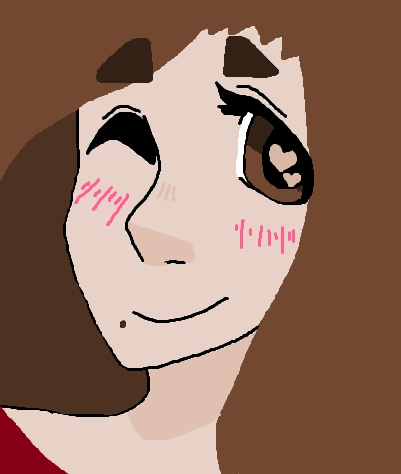

Nice to meet you! We're the creators of this website. For our CS-146 website project, we decided to create a website that allows you to post joke art made on MSPaint. Why MSPaint? Sometimes when you're stressed, you might wanna blow off some steam. That way, you can relax by letting your creative ideas flow and posting your creations for friends and others to see and enjoy! In the meantime, here's everyone who worked hard to make this idea happen:
Ian enjoys eating ice cream and watching anime such as "Black Lagoon"!

Miranda likes cats and spends more time drawing on MSPaint than she really should.
Damon has a lot of fun playing sports- especially baseball -and enjoys video games too!
Kirsten loves cats and her favorite genre of music is electronic.
Kurt enjoys swim team and likes to play video games after class.